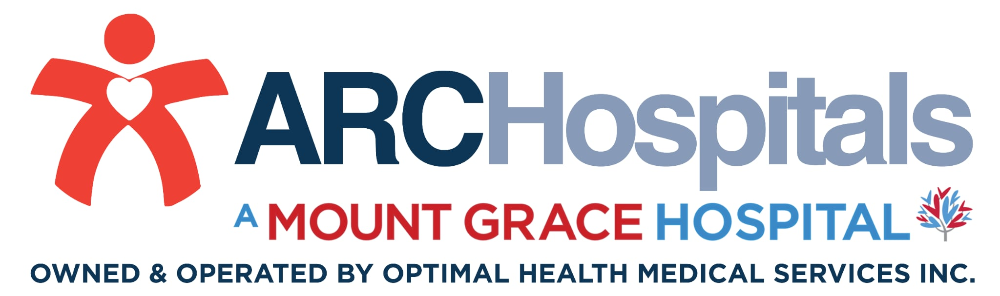

Ancillary Services
A. Laboratory – Level III
Clinical Microscopy
Chemistry
Immu‑Serology
Microbiology
Histopathology
Blood Bank
Drug Testing
B. Radiology – Level II
General Ultrasound
Digital Mammogram
Interventional Radiography (Guided Biopsy)
C‑ARM
C. Pulmonary
Pulmonary Function Test
Incentive Spirometry
D. Cardiology
24‑HR Holter Monitoring
2D Echo with Doppler (Adult)
2D Echo with Doppler (Pedia)
24‑HR Ambulatory BP Monitoring
Arterial Duplex (Lower Ext.)
Arterial Duplex (Upper Ext.)
AV Mapping (Both)
Arteriovenous Duplex (Lower Ext.)
Arteriovenous Duplex (Upper Ext.)
Carotid Duplex
Dobutamine Stress Echo
ECG
Evaluation of AV Shunt
Exercise Stress Echo
Treadmill Stress Test
Venous Duplex (Lower Ext.)
Venous Duplex (Upper Ext.)
Bubble Study